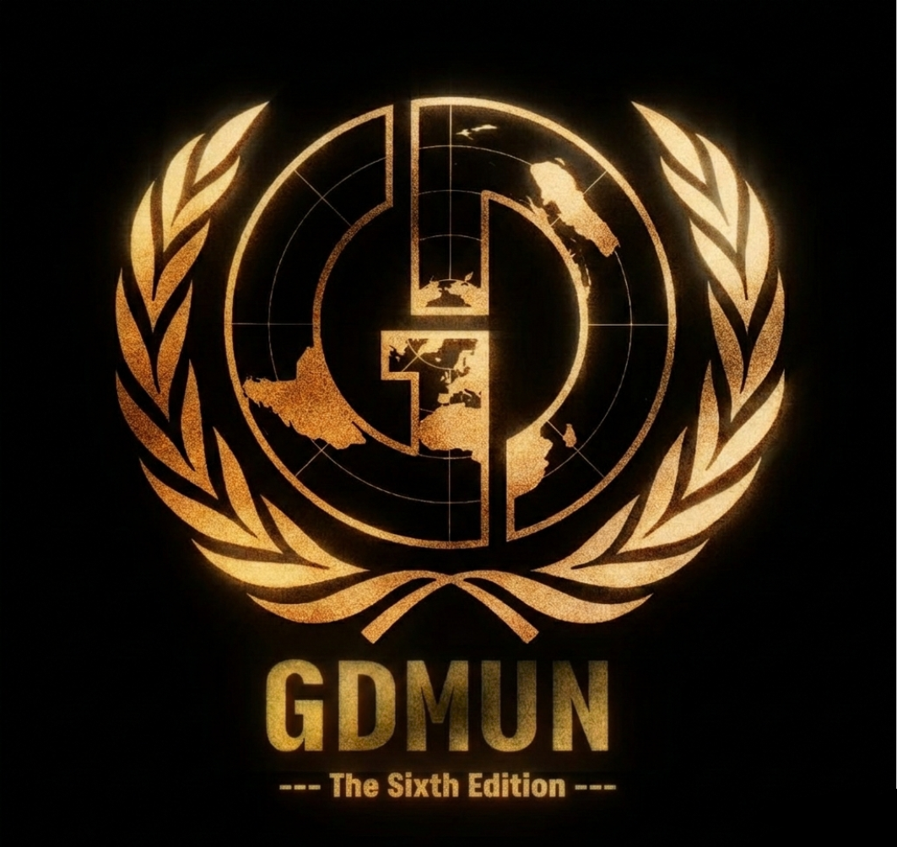

Six years ago, we dusted off our placards and stepped back into the arena. Since then, every gavel strike has echoed a little louder. We’ve survived on caffeine, last-minute research, and the sheer adrenaline of a deadlocked committee. We’ve turned post-lockdown uncertainty into a tradition of excellence, with each passing year becoming more chaotic, more ambitious, and more rewarding than the last. Behind the scenes, the brainstorming is already underway. The checklists are growing, and the vision is clear. We aren’t just planning another conference; we are engineering an experience. Will it be bigger? Surely. Bolder? Most definitely. The best one yet? Without a doubt. Welcome to GDMUN 2026. The floor is yours.

“There is no master but the one who conquers.” – Attila the Hun
We take immense pride in announcing the 6th edition of GDMUN— a conference that is far more than a debate. It is a warfare of ideas, a trial of wits, and an arena for those who refuse to let history be written for them. As a cornerstone of the circuit, GDMUN continues to uphold the highest standards of diplomacy, demanding more than just a presence—it demands a breakthrough.
In an era where narratives are crafted to distract and distorted to deceive, only the sharpest minds can cut through the noise. We don’t just invite you to speak; we challenge you to dismantle the status quo.
Last year was a testament to our evolution, bringing together the finest institutions to prove that true diplomacy isn’t found in grand speeches or empty pomp. It is found in the grit of deep thinking, the courage of tough questioning, and the power of shifting a room’s entire perspective.
This year, across seven vibrant committees, we push the boundaries even further. We invite you to step into an arena that will test your convictions and sharpen your resolve. Bold discourse is not for the faint-hearted; it is for the audacious, the relentless, and the fearless. The secretariat looks forward to a defining edition of GDMUN.
The only question remains: will you conquer the floor, or be silenced by it?